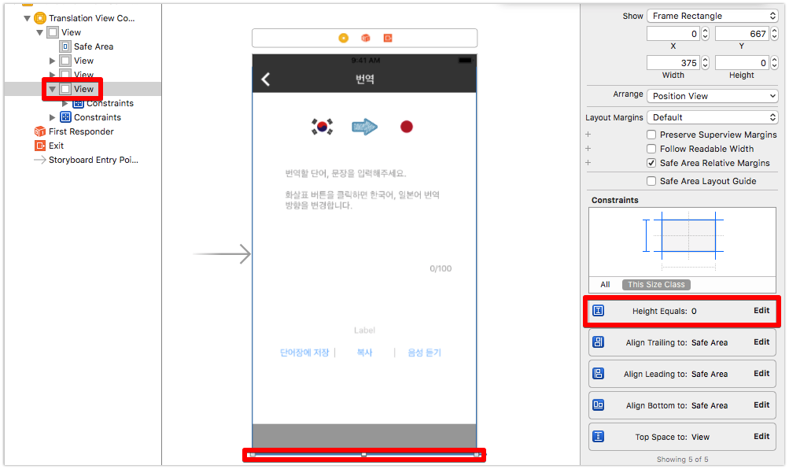

Storyboard autolayout 환경에서 Keyboard Event로 Height 처리하기
-읽음
Text Input이 필요한 화면에서 고려할점
TextView 또는 TextField를 이용해 사용자로부터 텍스트를 입력받는 화면에서는 키보드가 나타납니다.키보드가 나타나면 그만큼 컨텐츠를 보여줄 수 있는 화면의 Height는 줄어들게 되고 그 중 일부는 키보드 밑으로 말려들어가 보이지 않게 되는 문제가 생길 수 있습니다.
따라서 키보드가 나타날 때 아래의 뷰를 키보드 위로 올려주는 구현이 필요합니다.
왜 키보드는 Autolayout Bottom Layout에 걸리지 않는가…
스토리보드와 오토레이아웃을 사용하면서 iOS 11 이후 등장한 SafeArea에 대한 대응이 편해졌습니다.
처음에는 당연히 키보드가 나타날 때 Bottom Layout Guide가 올라오면서 자동으로 대응이 될 거라고 생각했지만…. 중요한 문구, 버튼들이 키보드 밑으로 말려들어가는 대참사가 발생했습니다.
Notification과 Autolayout을 이용해 간단하게 해결
iOS가 오토레이아웃을 해주지 않는다면 Keyboard 사이즈의 View를 직접 넣어 Autolayout으로 동작하게 만들고,
Notification을 이용해 keyboard 상태를 받아 Keyboard layout을 대신하는 View의 Height를 조작함으로써 수정했습니다.

Keyboard가 나타날 수 있는 ViewController의 가장 하단에 View를 하나 끼워넣습니다.
이 View는 키보드의 show, dismiss 동일한 타이밍, 사이즈로 동작하게 만들겁니다.
Contraint를 이용해 topAnchor를 기존에 가장 하단에 있던 뷰의 bottomAnchor에 연결하고, bottomAnchor는 viewController의 root view의 bottom layout guide에 연결해줍니다.
그리고 height는 키보드와 동일한 값을 갖게 할거고 초기값은 0으로 설정해줍니다.(키보드 없는상태)
이제 Notification을 이용해 이 View의 height를 조절하면 됩니다.
Keyboard Notification Register
1 | extension TranslationViewController { |
위 코드는 Keyboard Notification 관련 로직을 처리하기 위해 extension으로 분리한 controller입니다.
- initializeKeyboardEvent : Keyboard의 Show, Hide 이벤트를 받기위해 Notification Center에 옵저버를 등록합니다.
- keyBoardWillShow : Keyboard가 나타날때 호출되며 notification 객체에서 keyboard height 가져올 수 있습니다.
- keyBoardWillHide : Keyboard가 사라질때 호출됩니다.
- removeKeyboardEvent : Notification을 더 이상 사용하지 않을 때 옵저버를 제거합니다.
1 | class TranslationViewController: UIViewController { |
extension에서 구현했던 Nofitication관련 메소드들을 호출하는 메인 뷰컨트롤러입니다.
키보드를 사용하는 뷰 컨트롤러가 많지는 않지만, 추가될 때마다 이 작업을 계속해야 할 텐데, 아예 상속받을 뷰 컨트롤러을 하나 만들어 주는 것도 좋을 것 같습니다.